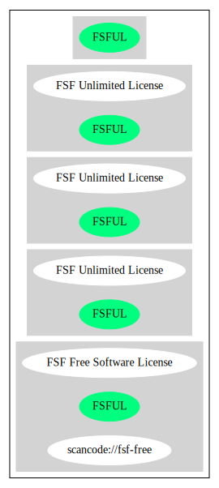

Key |
Value |
|---|---|
Fullname |
FSF Unlimited License |
Shortname |
FSFUL |
Rating |
Unknown, probably Attention or Stop or No-Go |
Classification |
NoCopyleft |
Other Names:
scancode://fsf-free
FSF Free Software License
Homepage: http://www.fsf.org/licensing/licenses/
SPDX: http://spdx.org/licenses/FSFUL.json
https://fedoraproject.org/wiki/Licensing/FSF_Unlimited_License
This configure script is free software; the Free Software Foundation gives
unlimited permission to copy, distribute and modify it.{
"__impliedNames": [
"FSFUL",
"FSF Unlimited License",
"scancode://fsf-free",
"FSF Free Software License"
],
"__impliedId": "FSFUL",
"facts": {
"SPDX": {
"isSPDXLicenseDeprecated": false,
"spdxFullName": "FSF Unlimited License",
"spdxDetailsURL": "http://spdx.org/licenses/FSFUL.json",
"_sourceURL": "https://spdx.org/licenses/FSFUL.html",
"spdxLicIsOSIApproved": false,
"spdxSeeAlso": [
"https://fedoraproject.org/wiki/Licensing/FSF_Unlimited_License"
],
"_implications": {
"__impliedNames": [
"FSFUL",
"FSF Unlimited License"
],
"__impliedId": "FSFUL",
"__isOsiApproved": false,
"__impliedURLs": [
[
"SPDX",
"http://spdx.org/licenses/FSFUL.json"
],
[
null,
"https://fedoraproject.org/wiki/Licensing/FSF_Unlimited_License"
]
]
},
"spdxLicenseId": "FSFUL"
},
"Scancode": {
"otherUrls": null,
"homepageUrl": "http://www.fsf.org/licensing/licenses/",
"shortName": "FSF Free Software License",
"textUrls": null,
"text": "This configure script is free software; the Free Software Foundation gives\nunlimited permission to copy, distribute and modify it.",
"category": "Public Domain",
"osiUrl": null,
"owner": "Free Software Foundation (FSF)",
"_sourceURL": "https://github.com/nexB/scancode-toolkit/blob/develop/src/licensedcode/data/licenses/fsf-free.yml",
"key": "fsf-free",
"name": "Free Software Foundation - Free Software License",
"spdxId": "FSFUL",
"notes": null,
"_implications": {
"__impliedNames": [
"scancode://fsf-free",
"FSF Free Software License",
"FSFUL"
],
"__impliedId": "FSFUL",
"__impliedCopyleft": [
[
"Scancode",
"NoCopyleft"
]
],
"__calculatedCopyleft": "NoCopyleft",
"__impliedText": "This configure script is free software; the Free Software Foundation gives\nunlimited permission to copy, distribute and modify it.",
"__impliedURLs": [
[
"Homepage",
"http://www.fsf.org/licensing/licenses/"
]
]
}
}
},
"__impliedCopyleft": [
[
"Scancode",
"NoCopyleft"
]
],
"__calculatedCopyleft": "NoCopyleft",
"__isOsiApproved": false,
"__impliedText": "This configure script is free software; the Free Software Foundation gives\nunlimited permission to copy, distribute and modify it.",
"__impliedURLs": [
[
"SPDX",
"http://spdx.org/licenses/FSFUL.json"
],
[
null,
"https://fedoraproject.org/wiki/Licensing/FSF_Unlimited_License"
],
[
"Homepage",
"http://www.fsf.org/licensing/licenses/"
]
]
}